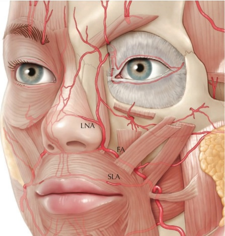
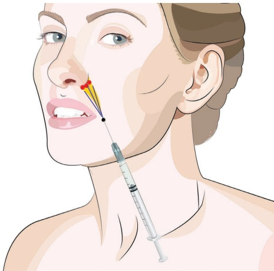
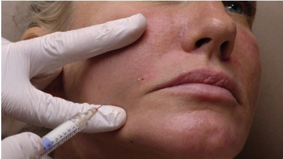
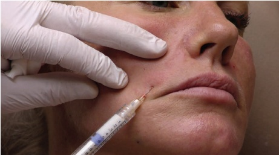
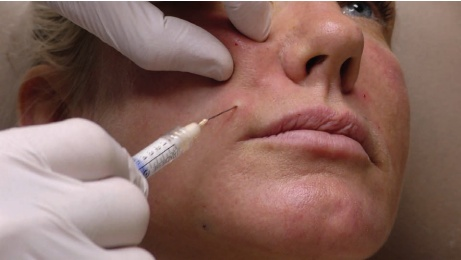
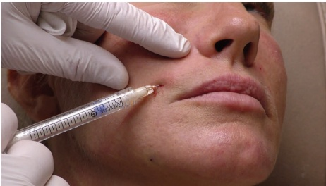
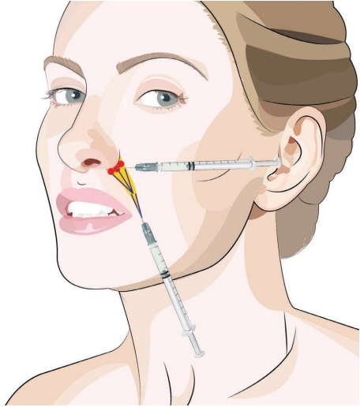
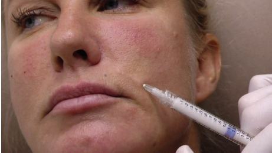
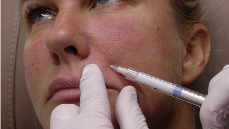
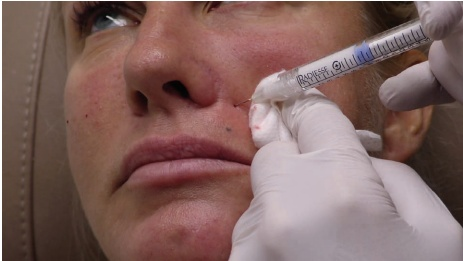

15 面部中三分之一：鼻唇沟
面部中段鼻唇沟
JANI VAN LOGHEM
15.1 引言
鼻唇沟可能是最常被要求填充的区域，也是新型填充剂注射者首选治疗的适应症。鼻唇沟位于鼻唇脂肪隔的内侧边缘，从我们发现最深点的外侧翼部延伸至口角外侧。在鼻唇沟处，不同的面部肌肉附着于皮肤，这使得它不仅是一个静态皱纹，还具有动态成分。衰老过程导致颊部软组织下垂，而鼻唇沟是浅层鼻唇脂肪隔在此下垂过程中受阻的地方，导致其向下覆盖到皮肤上的肌肉附着点。上颌骨的吸收加剧了鼻唇沟上部的加深，真皮层的胶原蛋白丢失增加了皱纹的锐度，皮下体积的丢失则加剧了沟本身的深度 [1]。
15.2 安全注意事项
使用针头注射鼻唇沟时，应注意不要注射过侧方，因为面动脉通常在皮下层位于沟的稍侧方。在沟的上部，靠近翼部处，推荐进行深层注射，因为表浅区域存在外侧鼻动脉的危险区（图 15.1）。
15.3 鼻唇沟钝性套管针技术 对于注射定位，参见图 15.2
15.3.1 分步技术
-
识别并标记鼻唇沟。
-
在沟的低端标记进入点，以便钝性套管针可以到达沟的上部。
-
进行消毒。考虑在进入点进行局部麻醉。
-
用 23G 针头制作预孔（图 15.3）。
-
使用未稀释的羟基磷灰石钙（CaHA）或标准稀释的 CaHA（每 1.5 mL CaHA 加入 0.3 mL 1% 利多卡因和 1:200000 肾上腺素）以及 25G、38 mm 或 50 mm 的钝性套管针。
-
将钝性套管针指向翼部的方向。确保其位于鼻唇脂肪隔的内侧。
-
确保钝性套管针放置在皮肤下方，位于沟的内侧或在沟内，但绝不能位于鼻唇脂肪隔的沟外侧。
-
缓慢而轻柔地将钝性套管针推进到沟的上部。如果遇到阻力，不要强行穿过钝性套管针，而是旋转注射器，使钝性套管针尖能找到绕过危险区的最少阻力路径（图 15.4）。
-
在沟本身内侧，每侧进行多条逆行线性丝，最大剂量为 0.1 mL/次。
-
不退出，将钝性套管针收回至进入点。
-
用非惯用手抬起钝性套管针前方的皮肤，并将钝性套管针通过 SMAS 层到达翼腭窝外侧边缘的上颌骨骨膜处（图 15.5）。
-
在骨膜上，钝性套管针尖会遇到与翼腭窝粘连组织的阻力。
-
不要强行穿过这些粘连组织，而是利用这种阻力作为已到达理想注射位置的标记。




-
缓慢注射约 0.1 mL 的团注（图 15.6）。
-
拔出钝性套管针，评估，如有需要则再次充填。注射额外的 CaHA 团注。


-
不要过度矫正。
-
根据需要用手动按摩使之均匀。
15.4 鼻唇沟锐针技术 对于注射定位，参见图 15.7
15.4.1 分步技术
-
使用未稀释的 CaHA 或标准稀释液（每 1.5 mL CaHA 加入 0.3 mL 含有 1% 利多卡因和 1:200,000 肾上腺素）以及 27G 或 28G 锐针（例如，按包装提供）。
-
通过捏取皮肤来确定沟纹。
-
从鼻唇沟的下端靠近口角处开始。
-
以约 45° 的角度将锐针刺入，直到针尖到达真皮-皮下交界处。
-
将锐针重新定向至与皮肤平行。
-
沿着沟纹向上推进锐针。
-
确保在反行注射过程中，产品绝不注射到沟纹外侧（图 15.8）。
-
注射两到三根反行线性丝，每根 0.05 mL（图 15.9）。
-
将锐针从皮肤上拔出。
-
重复此过程，向上移动，始终在注射少量产品的同时移动锐针。


-
拔出针头，从沟的顶部开始，垂直于皮肤朝向上颌骨的骨膜方向推进。
-
将少量 0.05–0.1 mL 的药物注射到与上颌骨接触处。
-
如果感觉针头穿过上颌骨，可能已进入鼻孔区。此时应将其牵拉并推进至骨膜（图 15.10）。
-
始终采用团注技术缓慢注射。
15.5 术后护理
如有必要，可手动按摩该区域以使产品均匀分布。用一根手指探入口腔


并用拇指在皮肤上进行按摩，产品即可轻松均匀分布。肿胀可能不均，应在一两天内消退。
15.6 为达到最佳效果的附加治疗
在处理鼻唇沟之前，可考虑进行面颊丰容，因为向面颊深层注射 CaHA 或其他填充剂通常可以减轻鼻唇沟。
参考文献
[1] R. B. Shaw et al., “Aging of the facial skeleton: Aesthetic implications and rejuvenation strategies,” Plast Reconstr Surg, vol. 127, no. 1, pp. 374–383, 2011.